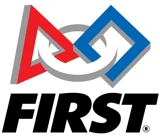

Seeking Summer 2027 internship and co-op roles
Ashwath Sridhar
Electrical engineering student at Georgia Tech. I design analog ICs, build embedded firmware, and automate hardware test, and I back each claim with a measurement or a verification report.
- Education
- B.S. Electrical Engineering, Georgia Institute of Technology, December 2028. GPA 4.0
- Interests
- Analog and mixed-signal IC design, embedded systems, hardware validation
- Experience
- EE intern at huMannity Medtec (summer 2026). SiliconJackets and HyTech Racing at Georgia Tech
- Tools
- Cadence Virtuoso, Altium Designer, LTspice, MATLAB, Python, C and C++
Download resumeEmail meLinkedIn
Selected resultsThe Basis column separates simulated values from bench measurements and verification reports.
| Parameter | Result | Basis |
|---|
| Ring VCO output frequencySKY130, 0 to 70 °C, tt corner | 451.2 to 549.6 MHz | Simulated |
|---|
| VCO and buffer layoutCadence Virtuoso, Pegasus checks | 0 DRC violations, LVS match | Verified |
|---|
| Characterization sweep timePython oscilloscope automation | 8 h to under 3 min | Measured |
|---|
| Battery-voltage monitor accuracyI²C, 1.8 V logic, 3,600 samples | 99.75% | Measured |
|---|
| H-bridge pulse timing accuracyAfter a schematic correction | Over 98% | Measured |
|---|
Projects
Each case study covers the problem, the method, the result, and what the evidence is. Select a project to read it.
Discovery project: flashing keychain PCB
Experience
Jun to Aug 2026

Electrical Engineering Intern
huMannity Medtec, Santa Clarita, CA
- Found and fixed a schematic error in an H-bridge switching circuit by comparing oscilloscope waveforms with expected behavior, then validated pulse timing to over 98% accuracy.
- Replaced an eight-hour manual oscilloscope characterization with a Python script and GUI that finishes in under three minutes.
- Wrote microcontroller firmware to validate I²C battery-voltage monitoring at 1.8 V logic, reaching 99.75% accuracy over 3,600 samples.
- Improved amplifier gain in an ECG acquisition circuit so it reliably detects 0.5 mV R-wave signals.
Aug 2026 to present

Analog Design Team Member
SiliconJackets, Georgia Tech
- Designed a five-stage current-starved ring VCO and a six-stage tapered output buffer in SKY130 that covered 450 to 550 MHz over 0 to 70 °C in simulation.
- Completed the full-custom layout in Cadence Virtuoso with zero DRC violations and a clean LVS match, and presented the design review to the team.
Aug 2026 to present

Electrical Team Member
HyTech Racing, Georgia Tech
- Designed a two-layer USB-C powered PCB in Altium with an LM555 astable oscillator, a six-LED array, and custom schematic and footprint libraries, then verified it on hardware.
- Wrote modular C++ firmware that reads a BME280 sensor over I²C and SPI, with GitHub continuous integration build checks.
Aug 2022 to Jun 2025

Lead Programmer
FIRST Robotics Team, California
- Led programming for drivetrain, vision-assisted tracking, and arm control, and mentored more than ten fellow programmers.
Skills
Design and simulation
Cadence Virtuoso, SKY130 CMOS, Altium Designer, LTspice, MATLAB, analog IC design, process corners, full-custom layout
Code and embedded
Python, C, C++, Java, Simplicity Studio, Arduino, I²C, SPI, Git and GitHub
Bench and verification
Oscilloscopes, function generators, multimeters, power supplies, test automation, DRC and LVS, PCB debugging, soldering
About

I came to electrical engineering through programming and robotics, then kept going down the stack to the signals, devices, and timing constraints underneath the code. Analog and mixed-signal design appeals to me because transistor behavior, circuit architecture, simulation, and layout all have to agree.
As lead programmer on a FIRST Robotics team, I mentored more than ten programmers. Watching a teammate go from unsure about the codebase to shipping a feature on their own changed how I think about working on a team.
I am looking for a Summer 2027 internship or co-op with strong technical mentorship and ownership of a real design or test problem.